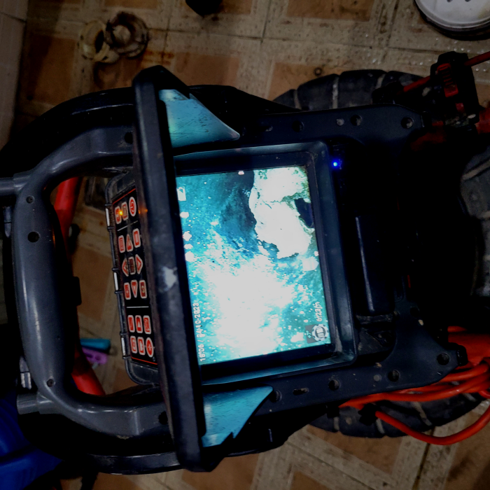
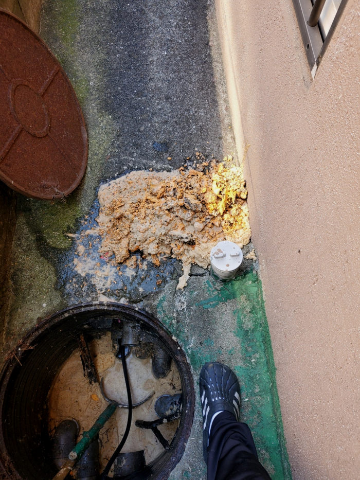
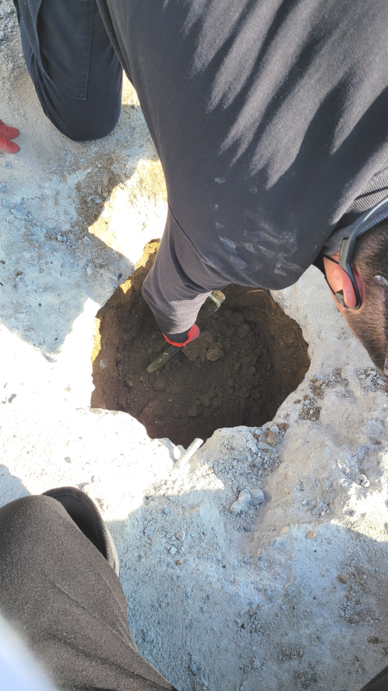
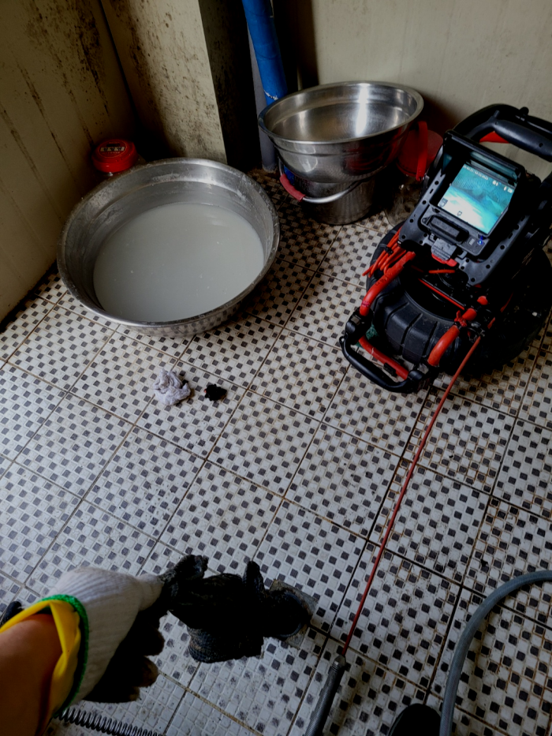
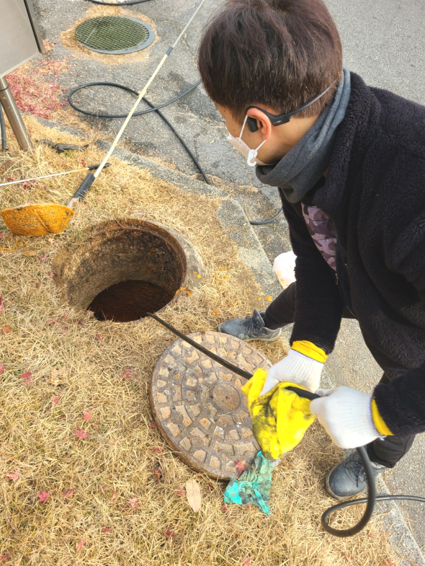
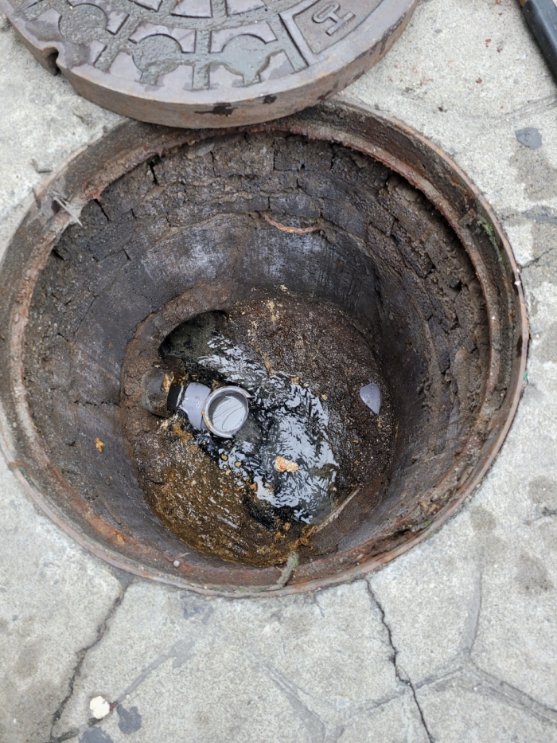

🏠 부평 십정동 하수관막힘 청천동 배수구뚫음 배관청소 설비
용인 싱크대막힘 전문 시공 후기

📋 작업 개요
- 위치: 용인
- 서비스 유형: 싱크대막힘, 변기막힘, 하수구막힘, 배관막힘, 역류해결, 뚫는업체, 배관청소, 고압세척
- 작업 일시: 2024. 2. 5. 16:58
- 업체명: 하수구수사대 (010-5615-2118)
🔍 문제 상황
안녕하세요^^
설비전문업체 "하수구수사대"를 찾아주셔서 감사합니다^^
물을 사용하는 장소라면 하수관가 설치되어 있는 모습을 확인할수 있을 것입니다. 하수관는 사용한 물이 흘러나가는 공간으로 다양한 배관으로 연결됩니다.
해야 할 일을 퇴수가 막혔다는 이유 하나로 제때 못하게 되니 그로 인한 스트레스도 쌓이게 되죠. 퇴수는 막힘과 동시에 해결을 해야합니다. 일반인이 손 볼 수 없는 상황들이 대다수인 만큼 전문업체의 도움이 꼭 필요한 분야 중 하나죠.

🔎 원인 분석
💡 전문가 진단: 부평 십정동 하수관막힘 청천동 배수구뚫음 배관청소 설비
부평 십정동 하수관막힘 청천동 배수구뚫음 배관청소 설비
배관 퇴수구내시경의 케이블을 이용해 배관 내부를 확인하고, 원룸 화장실 배관 청소를 완료해서 불필요한 이물질을 완전히 제거하는 작업을 했습니다. 퇴수구배관 내부에 단단히 붙어있는 슬러지까지 제거해서, 고객님께서 안심하고 의뢰하실 수 있게 안내드렸습니다.
물에잘안풀리는 물질등이 배수가운데에 적체되서 물이시원하게 안내려가는것입니다. 거기에더해 불결한 내부가 만들어지기도합니다.사려깊게 생활을했어도 오랜시간이지나면 육안으로관찰하기 힘든곳까지 배수배관에 이물질이 쌓이기도합니다.
최근에는 배수관 막힘으로 연락을 주시는 빈도수가 많아 출동하는 건들이 굉장히 많습니다. 올해에도 출동한 건들을 확인해 보니 지난달과 이번 달에는 배수관 막힘으로 연락을 주시는 분들이 많았습니다. 물론 매달 같은 건 아니고 다른 달에는 변기 막힘이나 싱크대 막힘 등 같은 여러 가지 이유들로 많이들 문의하시고 있습니다.

🔧 작업 과정
대충 배수구뚫어주고 싸게 돈을 받는 업체를 통해 뚫는다면, 얼마 안 되어 다시 막혀도 또 비용을 지불하고 시간도 내고 이러한 일이 반복되다 보면 그제야 한 번 할 때 확실하게 해결하는 곳을 찾으시는 분도 계시더라고요.
석션기를 이용하여 작고 단단하지 않은 이물질들을 우선으로 제거하였습니다. 배출관작업 중간에 물을 틀어주면 압력을 이용하여 조금 더 용이하게 제거할 수 있습니다. 계속해서 제거를 해나가다 보니 더 이상 석션기로는 부족할 정도로 배출관막힘이 발생한 곳을 발견할 수 있었습니다. 이때부터는 석션기로 흡입하는 것이 아니라 스케일링 작업을 진행해야 하기 때문에 최신장비를 교체해 주었습니다.
하수도 막힘 해결을 위해선 무슨장비가 필요할지정확히알수없어 전반적인수리에 악영향을끼치지않도록 빠짐없이 가지고있어야된답니다 가령고객님들이 전문가를선별하는과정에서 작은부분도 소홀히하지않으시면 내집의 귀중한하수관을 깨끗하게만들수있어요!
고객님께도 배출구내시경 화면을 보여드리며 이번에 한 작업에 대한 설명과 배관 상태에 대하여 알 수 있게 해드렸습니다. 배출구배관에 물이 시원하게 내려가는 것을 본 고객님께서는 속이 너무 뚫리는 기분이라며 감사하다고 말씀하셨습니다.
배관 스케일링을 하려면 내시경 카메라로 꼼꼼히 살펴봐야 해서 시야 확보가 충분히 되어야 배출구 내부 상태를 확인하며 세세히 작업이 가능합니다.
샤프트 장비로 분쇄를 하는데 이번에 저희가 사용한 장비는 기름 슬러지 전용 장비로 벽면에 붙은 기름까지 제거가 가능한 장비입니다.현장에서도 사용한 동일 제품으로 강력한 힘을 가지고 있는 제품이죠.
고압세척기가 열심히 파쇄한 찌꺼기들부터 빠르게 밖으로 걷어내고 내시경 카메라로 퇴수내부를 다시 한번 살펴봅니다. 참고로 이물질 제거에는 펌프와 석션기가 동원되었는데 덕분에 내시경 시야도 충분히 확보되었습니다.


✅ 작업 완료
그러니 지금 막혀서 당황스럽다고 한다면 걱정하지 마시고 저희를 불러주시면 지금 이곳처럼 바로 원인을 찾아서 퇴수 뚫어드리도록 하겠습니다.
#하수구막힘 #하수구뚫음 #하수구역류 #씽크대막힘 #싱크대역류 #오수관막힘 #하수구청소 #욕실하수구막힘 #변기막힘 #하수구뚫는비용 #싱크대수리 #화장실막힘




⚠️ 주방 싱크대 배관 막힘 예방 수칙
- ✅ 기름기가 묻은 식기나 프라이팬은 설거지 전 키친타올로 반드시 기름때를 닦아내세요.
- ✅ 주기적으로 싱크대 개수대에 뜨거운 물을 가득 받아 한 번에 내려 배관 내부 기름을 씻어내세요.
- ✅ 배수구 거름망을 미세한 필터로 사용하시고 음식물 찌꺼기가 틈으로 새어 들지 않게 관리하세요.
- ✅ 베이킹소다와 식초를 뜨거운 물과 함께 일주일에 한 번씩 부어주면 배관 살균과 막힘 예방에 좋습니다.
💡 핵심 정리
- 확실한 장비 작업(내시경 점검 및 샤프트 스케일링)으로 원인을 뿌리 뽑습니다.
- 작업 후 1년 이내에 동일한 부위 재발 시 100% 무상 A/S 서비스를 보장합니다.
- 서울 · 경기 · 인천 전 지역에 24시간 언제든 긴급 출동할 수 있도록 항시 대기 중입니다.
❓ 자주 묻는 질문 (FAQ)
🚨 용인 싱크대막힘 문제로 고민이신가요?
정확한 원인 진단과 확실한 시공으로 재발 없는 해결을 약속드립니다.
24시간 긴급 출동 | 서울 · 경기 · 인천 전지역 | 1년 내 재발 시 무상 A/S